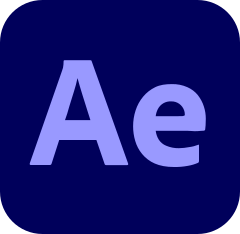
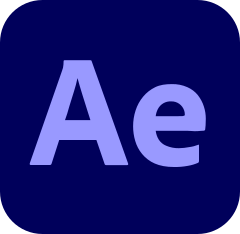

Who am I?
Welcome to my digital canvas! I'm Jacob Jørgensen, a passionate freelance photographer, videographer, and coder.
My lens captures moments that tell stories, and my code brings digital visions to life.
Here, you'll discover the fusion of art and technology in my work. Explore my portfolio, delve into my projects, and get a glimpse of my creative world.
Let's connect and bring your ideas to reality through the power of visuals and code.
Programs


 
